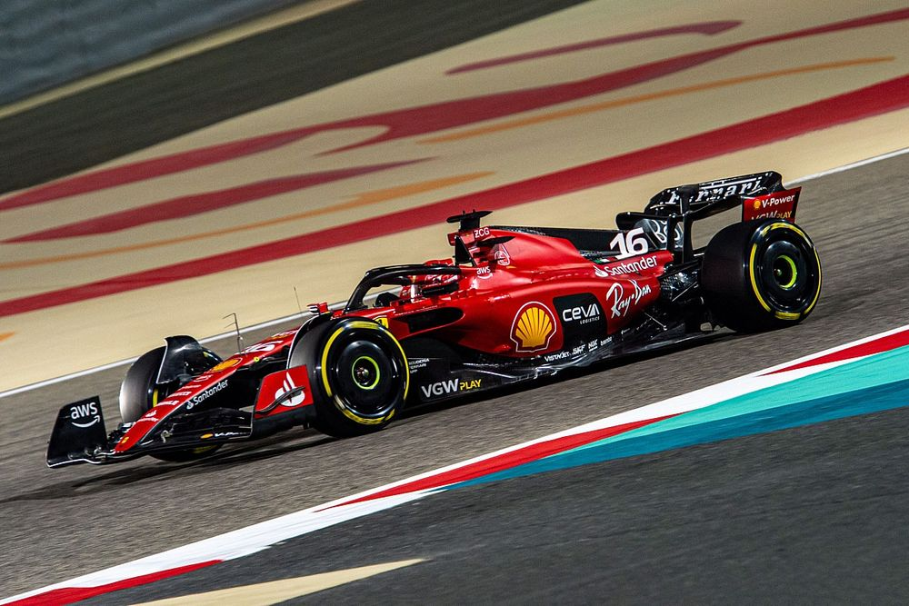

Formula 1 sonuçları
Takımlar Şampiyonuluğu Kazanma Yüzdesi: %28,6 Pilotlar Şampiyonluğu Kazanma Yüzdesi: %23,4 Yarış Kazanma Yüzdesi: %25,2 Ayrıca Ferrari takımı F1'deki çoğu rekoru elinde tutmaktadır: En çok Takımlar Şampiyonuluğu: 16 En çok Pilotlar Şampiyonluğu: 15 En çok yarışa katılma (Tüm zamanlar) : 1060 En çok yarışa başlama (Tüm zamanlar) : 1056 En çok galibiyet: 241 En çok podyum: 794 En çok duble: 81 Aynı pilotlarla en çok duble (Michael Schumacher – Rubens Barrichello): 24 En çok pol pozisyonu: 243 En çok takımlar şampiyonası puanı: 5,849.5 En çok pilotlar şampiyonası puanı: 6,751.27 En çok en hızlı tur: 258 Arka arkaya her sezon zafer kazanma: 20 (1994-2013) Arkaya arkaya en çok podyuma çıkma: 53 (1999 Malezya Gp-2002 Japonya Gp) Ferrari ayrıca 241 galibiyet ile en başarılı motor üreticisidir. 2015 F1 sezonunda kullanılan 19 pistin tur rekorlarından, 8'i Ferrari F2004, 3'ü Ferrari F2003-GA, 1'i Ferrari F2008 ve 1'i de Ferrari F10 tarafından kaydedilmiştir.
Formula 1 araçları
1948 125 F1 1950 275 F1 1950 340 F1 1950 375 F1 1951 500 F2 1954 553 F1 1954 625 F1 1955 555 F1 1955 Ferrari-Lancia D50 1957 801 F1 1958 246 F1 1959 256 F1 1960 246 P 1961 156 F1 1964 158 F1 1964 512 F1 (aka 1512) 1966 246 F1-66 1966 312 1970 312 B 1971 312 B2 1973 312 B3 1975 312 T 1976 312 T2 1978 312 T3 1979 312 T4 1980 312 T5 1981 126 C 1982 126 C2 1983 126 C3 1984 126 C4 1985 156/85 1986 F1-86 1987 F1-87 1988 F1-87/88C 1989 640 1990 641 1991 642 1991 643 1992 F92A 1993 F93A 1994 412 T1 1995 412 T2 1996 F310 1997 F310B 1998 F300 1999 F399 2000 F1-2000 2001 F2001 2002 F2002 2003 F2003-GA 2004 F2004 2005 F2005 2006 248 F1 2007 F2007 2008 F2008 2009 F60 2010 F10 2011 150° Italia 2012 F2012 2013 F138 2014 F14 T 2015 SF15-T 2016 SF16-H 2017 SF70H 2018 SF71-H 2019 SF90 2020 SF1000 2021 SF21 2022 F1-75 2023 SF-23
Tanınmış pilotlar
Alberto Ascari Jose Frolinan Gonzalez Liugi Villoresi Nino Farina Lorenzo Bandini Juan Manuel Fangio Peter Collins Mike Hawthorn Tony Brooks Phil Hill Wolfgang von Trips John Surtees Mario Andretti Jackie Ickxx Clay Regazzoni Carlos Reutemann Niki Lauda Gilles Villeneuve Jody Scheckter Didier Pironi Patrick Tambay Rene Arnoux Michaele Alboreto Stefan Johansson Gerhard Berger Nigel Mansell Alain Prost Jean Alesi Eddie Irvine Rubens Barrichello Michael Schumacher Felipe Massa Kimi Raikkonen Fernando Alonso Sebastian Vettel Charles Leclerc Carlos Sainz Jr.
